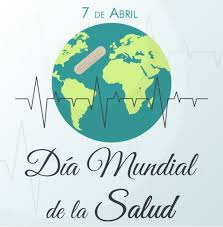

El Dia Mundial de la Salud se celebra el 7 de abril para conmemorar la creacion de la Organizacion Mundial de la Salud. La OMS —WHO, por su sigla en ingles— se creo el 7 de abril de 1948 en Ginebra, Suiza. En esa misma oportunidad la Asamblea de las Naciones Unidas determino que el 7 se abril se celebraria en todo el mundo el Dia Mundial de la Salud.
Que se trata de conseguir ?
Los objetivos principales del Dia Mundial de la Salud, seran:
- Acrecentar la concienciacion respecto del aumento de la diabetes y de sus abrumadoras cargas y consecuencias, en particular, en los paises de ingresos bajos y medianos.
- Impulsar un conjunto de actividades especificas, eficaces y asequibles, para hacer frente a la diabetes, con medidas para prevenirla y para diagnosticar, tratar y atender a quienes la padecen.
- Presentar el primer informe mundial sobre la diabetes, que describira la carga y las consecuencias de la diabetes y abogara por sistemas de salud mas solidos, que aseguren una mejor vigilancia, una prevencion reforzada y una atencion mas eficaz de la diabetes.

 1
1